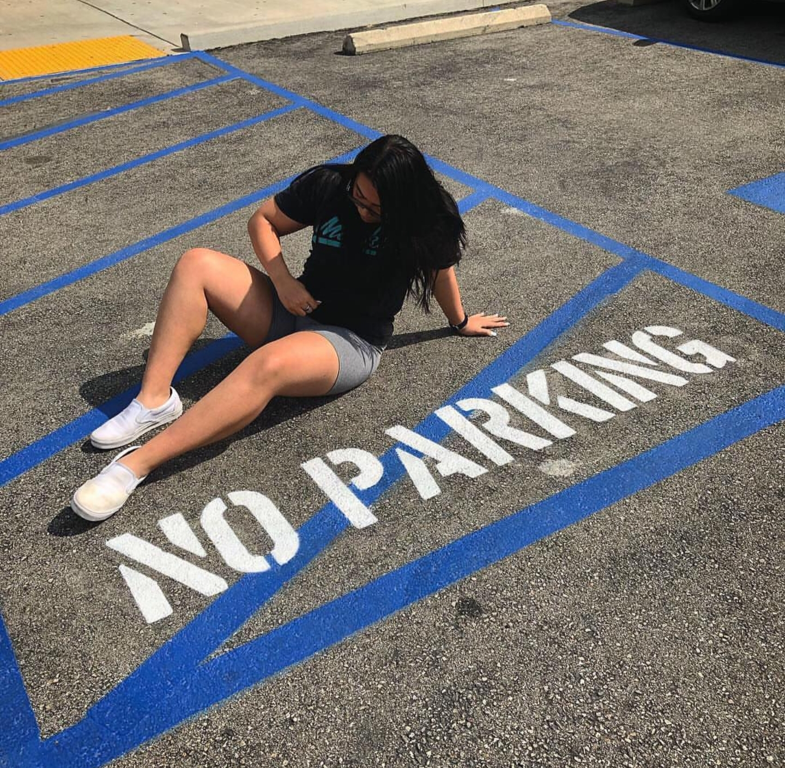

16 year old mixed Asian coder, hacker, and gamer, born and raised in Los Angeles, California. Thick thighs save lives! unconvential instagram baddie <3  here's my instagram if you wanna check it out!
So like I make music on SoundCloud, here's the link if you wanna check it out. It's not that great, I'm not a professional, it's more or less trap music so if you're not into that, come back soon I'll be releasing more music!!!